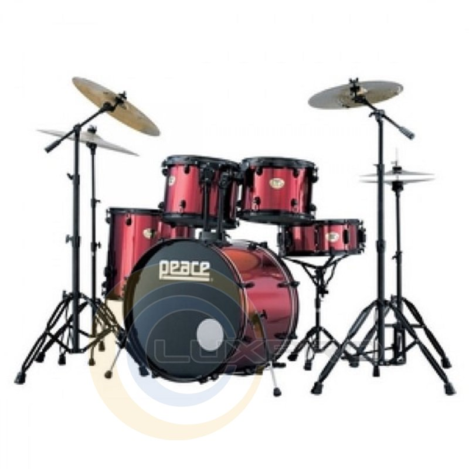
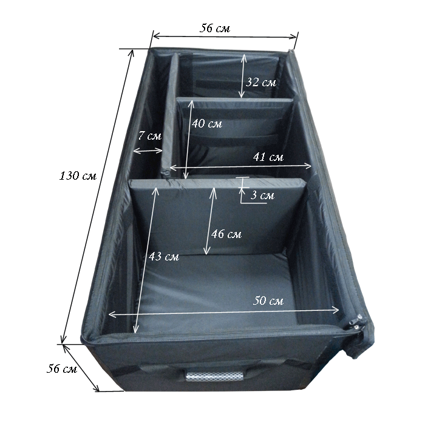

Барабан — загальна назва для ряду ударних музичних інструментів групи мембрафонів, що складається зі шкіри (пергаменту, пластику, нейлону), натягнутої на резонатор. На барабані грають паличками[ru] або руками. Також барабан це інструмент, який був створений заради відтворення звуку биття серця.
Ударна установка (англ. drum set або drum kit) - набір інструментів, спеціальним чином встановлених для гри «барабанника» в неакадемічній сучасній музиці. До ударної установки входять тарілки креш, райд, хай-хети, навісні та підлоговий том-томи, малий барабан та бас-барабан, а також, іноді, інші ударні інструменти.

Ранні ударні установки були відомі під назвою trap kits (коротка
рекламна назва), до якої входили інструменти сімейства Мембранофонів.
Звичайно в наборі були бас-барабан, малий барабан на підставці, маленька
тарілка та інші ударні інструменти прикріплені до бас-барабану або до
невеликого столу. По всіх інструментах окрім бас-барабану грали
паличками або щітками. Бас-барабан періодично буцали ногою для
видобування звуку, звідки дотепер зберігається назва kick drum.
В наш час бас-барабаном завжди керують педаллю. Іноді грають навіть
з двома педалями для досягнення більшої швидкості. Частина назви Trap
set перейшла в сучасний термін Trap Case, котрим називають кофр,
що використовується для перевезення підставок, педалей, паличок
та різних ударних інструментів.
